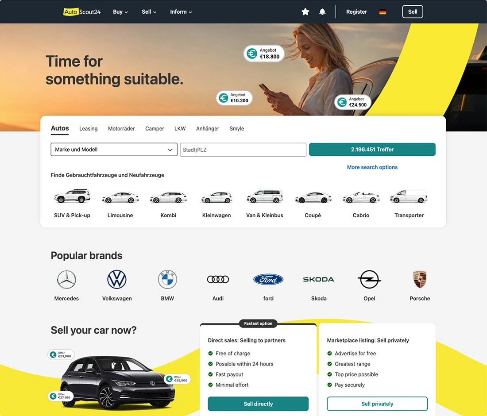
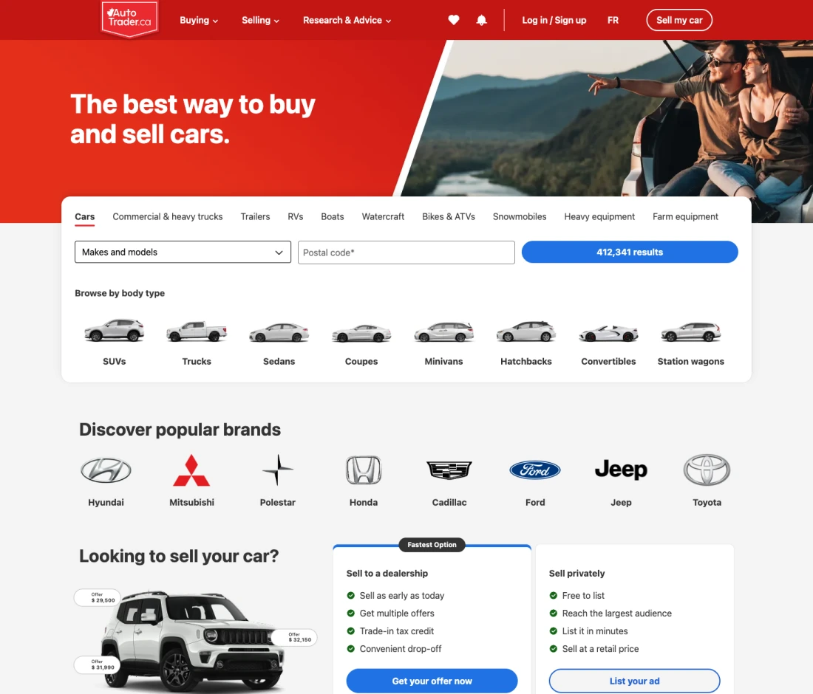
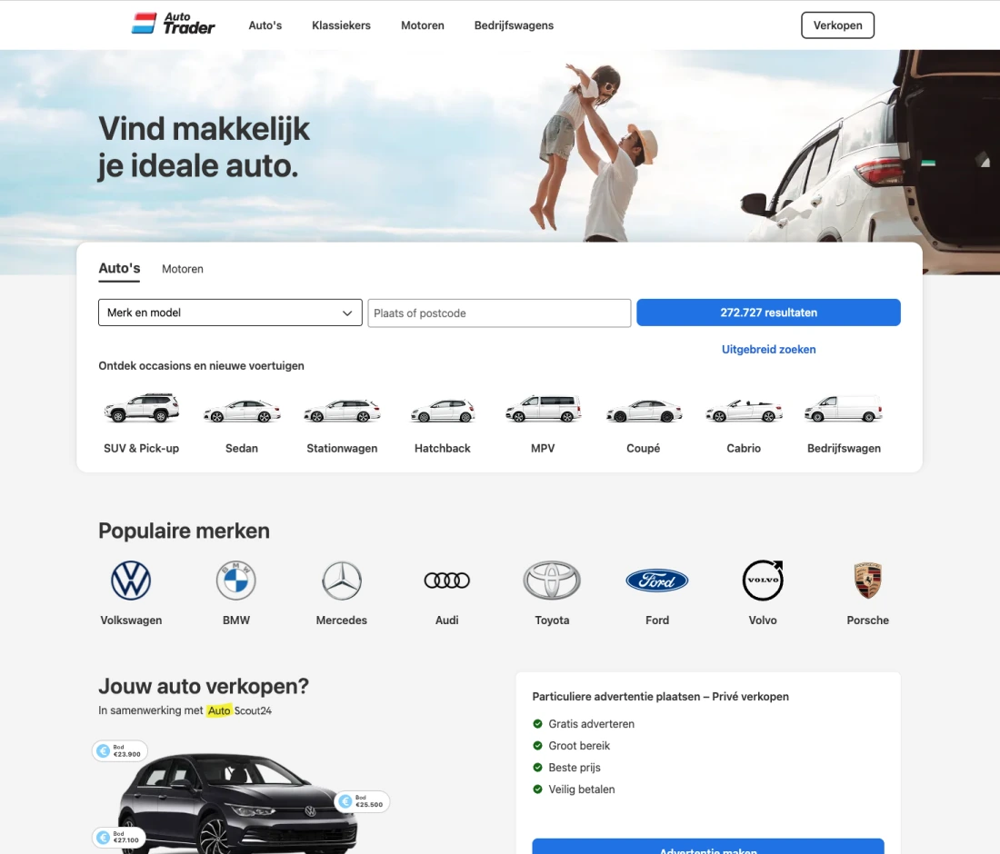
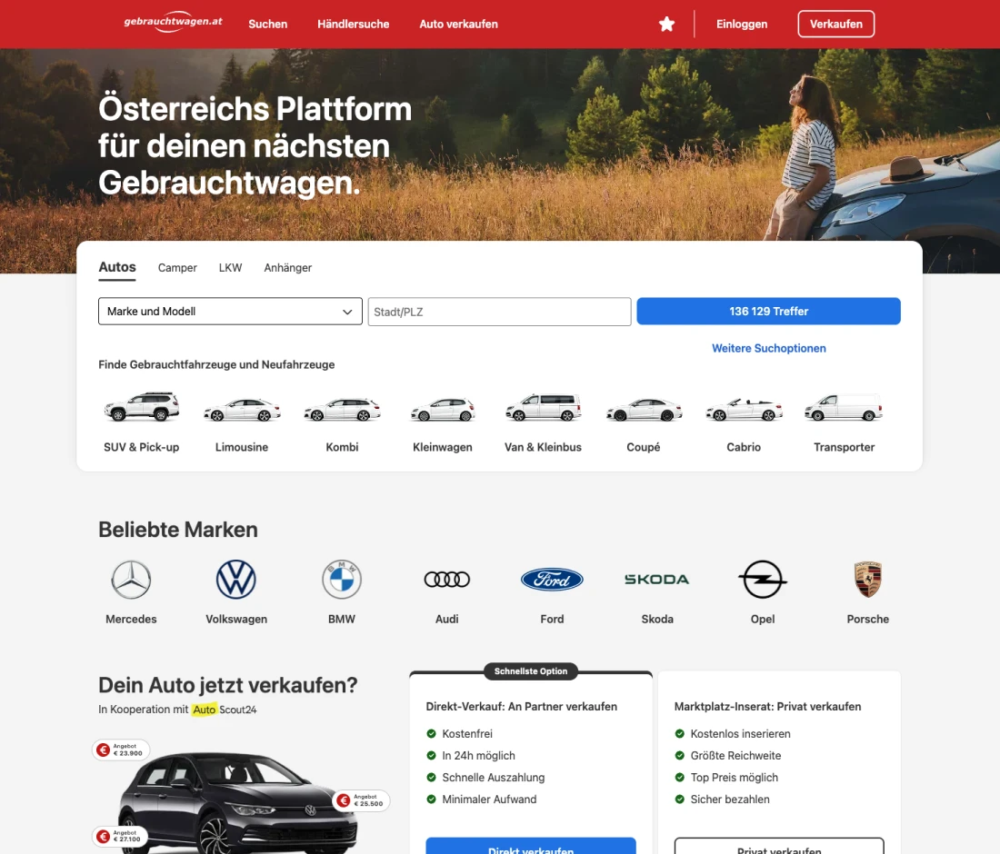

Multi-Brand Design System
Scaling a multi-brand, code-synced design system without a dedicated team.

A system nobody owned
When I took on leading Showcar, AutoScout24's design system, it had no owner. It was a loose collection of components, and adoption across the design team and engineering was patchy.
A new brand acquisition meant the company needed a system that worked across the company, and fast. I led the project alongside my product work, bringing in the wider UX team to contribute next to my own hands-on work.
Design drift, and a second brand
Without an owner or a shared source of truth, every team solved the same problems in its own way. Signed-off designs would appear differently in production.
Additionally, a new requirement appeared: our design system had to support the newly acquired AutoTrader.ca in Canada, a company with a different brand. The acquisition only made sense if both businesses ran on one platform. To support that, the design system had to become far more complete, and it had to carry more than one brand.

Building it with people, not for them
I was leading Showcar alongside my product work, so I couldn’t build it all myself, and I didn’t want to. A system one person owns breaks the moment they’re busy. The bigger change was in how the organisation worked: Showcar had to become something designers and engineers across teams built together.
- A way to contribute. I set up a contribution process: a dedicated Slack channel and a bi-monthly UI Guild call where designers could propose new components or changes to existing ones.
- Components with the UX team. I worked with the UX team to design the components and write their documentation, so every addition shipped with guidance on how to use it.
- Engineers who cared. I looked for the engineers who were passionate about the system and wanted to build it together, and made them part of the core group.
- Tokens that match one to one. I created a token system that syncs Figma variables with the development tokens, so design and code always hold the same values. Switching brand became a change of token set rather than a redesign.


One system, many brands
Showcar is now the default way AutoScout24 designs and builds. In Figma, 26 teams use it, inserting around 30,000 components a week. Designers almost never break away from it: across the most-used components, fewer than 1 in 2,000 inserts are detached, so what gets designed stays on the system.
In code, 38 components are fully implemented, underpinning more than 10 products, including search, the homepage, listing creation, dealer inventory and dealer account pages. Adding two new brands, AutoTrader.nl and gebrauchtwagen.at, took about two weeks of development.








AI agents are becoming a customer for the design system
As AI changes how we work, the design system has a new kind of user: the agents the team builds with. Codex and Figma Make can produce a screen in minutes, but without the system to draw on, their output drifts.
So I’m moving Showcar’s documentation into GitHub, alongside the code, where agents can read it. With our platform team, I’m building an MCP server for the design system, so agents can look up the right components, tokens and usage rules as they work. The aim is the one Showcar has always had: what gets specified is what gets built, whether a designer or an agent is doing the building.
While the MCP server is in progress, my Figma Make kit already gives agents the rules. Both pages below were built in one shot from a single prompt, the second with the kit. They play side by side, so you can compare them as they scroll.